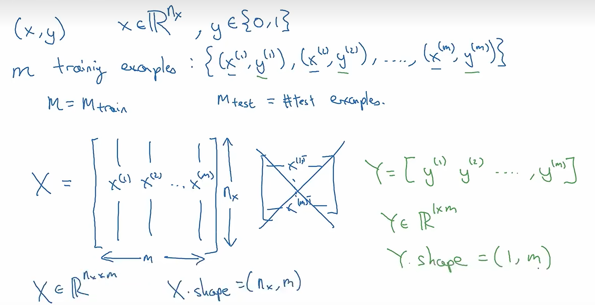
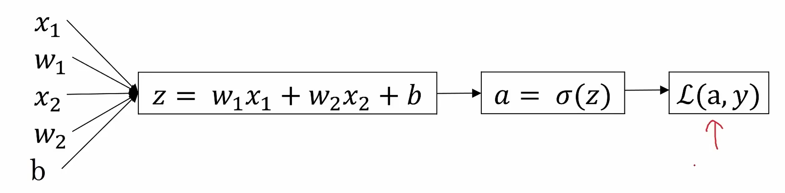
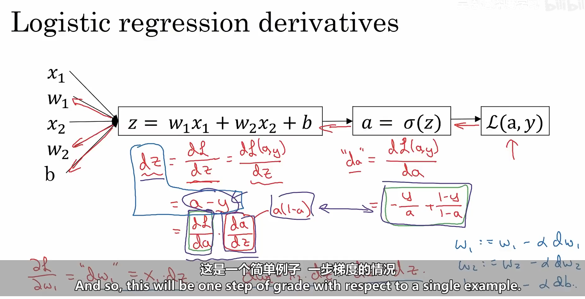
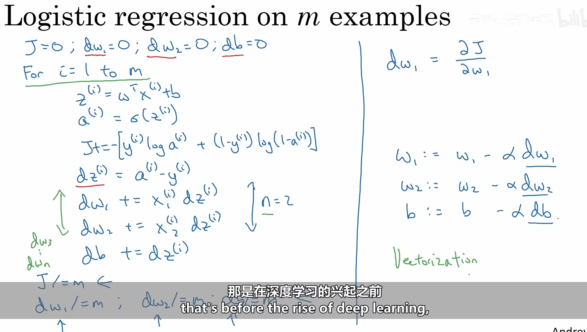

吴恩达
# Neural Network
- Example: House Price Prediction
Standard Neural Network, CNN (convolutional, 图像等), RNN (recurrent, 时序序列)
Structured Data: 表格数据
Unstructured Data: 文本，语音，视频，图片
为什么效果好？
scale of data + scale of computation + better algorithms
# Basic of NN
# Binary Classification
输入 x 输出 0 或 1

对于训练集，有 m 个样本
m 个输入向量组成nx×m 的矩阵 X
m 个 label 组成1×m 的行向量 Y
# Logistic Regression
一种二分类算法
given x, want y^=P(y=1∣x),x∈Rn
Parameters: weights w, bias b
Output: y^=σ(wTx+b)
w 是一个列向量，大小为 nx×1，解释是对于每个特征都有一个权重
σ(z)=1+e−z1 (sigmoid function, make sure y^∈[0,1])
# Logistic Regression Cost Function
Given(x(1),y(1)),...,(x(m),y(m)), want y^(i)≈y(i)
希望预测值和真实值接近
Loss function: 对于一个样本来说
L(y^,y)=−[ylog(y^)+(1−y)log(1−y^)]
不希望有多个局部最优，所以用交叉熵损失函数
Cost function: 对于m 个样本（整个训练集）来说
J(w,b)=m1i=1∑mL(y^(i),y(i))=−m1i=1∑m[y(i)log(y^(i))+(1−y(i))log(1−y^(i))]
找到一组参数w,b 使得J(w,b) 最小
# Gradient Descent
梯度下降
为了便于理解，先忽略 b，只考虑 w，对于J(w):
repeat{w:=w−α∂w∂J(w)}
α 是学习率，也就是一次迭代所使用的步长，正负取决于初始值在哪边
对于J(w,b)
repeat{w:=w−α∂w∂J(w,b)b:=b−α∂b∂J(w,b)}
Derivative 表示函数的变化率，Gradient 表示多变量函数的变化率方向和大小
# Logistic Regression Gradient Descent
在一个样本上：

采用链式求导，先用L(a,y) 对a 求导
∂a∂L=−ay+1−a1−y
再用a 对z 求导 (sigmoid 函数求导)
∂z∂L=∂a∂L⋅∂z∂a=−ay+1−a1−y⋅a(1−a)=a−y
再用z 对w 求导
z=wTx+b=w1x1+w2x2+...+wnxn+b所以∂wi∂z=xi

# Logistic Regression Gradient Descent on m samples
对于 m 个样本：
J(w,b)=m1i=1∑mL(a(i),y(i))wherea(i)=σ(z(i))=σ(wTx(i)+b)
串行的话只能用 for 循环，但是太慢了，所以可以利用矩阵运算

# Vectorization
向量化